primitiveQuad operation
width float Width of the quad.
length float Length of the quad.
The primitiveQuad operation inserts a quad geometry into the scope of the current shape.
- If no width and length is given the bounding box coincides with the scope. Zero scope sizes are handled the same way as in the i operation.
- If dimensions are specified the quad is positioned in the xz center of the scope lying on y=0.
If one scope size is zero while the 2 other sizes are not zero the quad will be inserted with respect to the plane defined by the valued scope sizes.
The quad has texture coordinates on the first texture layer (COLORMAP).
Examples
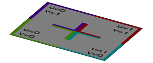
Lot-->
rotateScope(0, 0, 90) // scope.sx is 0
primitiveQuad
texture("builtin:uvtest.png")
The inserted quad is fit into the current scope yz dimension.
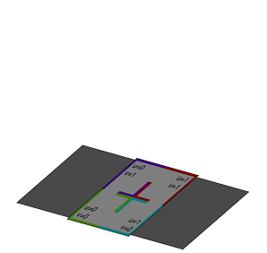
Lot-->
rotateScope(0, 0, 90) // scope.sx is 0
primitiveQuad(10,20)
texture("builtin:uvtest.png")
The inserted quad has a width of 10, a length of 20 and is positioned in the yz center.
Related
primitiveDisk operation
nVertices float Number of vertices at the boundary of the disk. There must be at least 3 vertices. The default value is 16.
radius float Radius of the disk.
The primitiveDisk operation inserts a disk geometry into the scope of the current shape.
- If no radius is given the bounding box coincides with the scope. Zero scope sizes are handled the same way as in the i operation.
- If radius is specified the disk is positioned in the xz-center of the scope lying on y=0.
If one scope size is zero while the 2 other sizes are not zero the disk will be inserted with respect to the plane defined by the valued scope sizes.
The disk has texture coordinates on the first texture layer (COLORMAP).
Examples
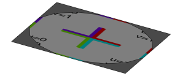
Lot-->
rotateScope(-90, 0, 0) // scope.sz is 0
primitiveDisk
texture("builtin:uvtest.png")
The inserted disk has 16 vertices and is fit into the current scope xy dimension.
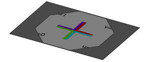
Lot-->
rotateScope(-90, 0, 0) // scope.sz is 0
primitiveDisk(8,10)
texture("builtin:uvtest.png")
The inserted disk has 8 vertices, a radius of 10 and is positioned in the xy center.
Related
primitiveCube operation
width float Width of the cube.
height float Height of the cube.
depth float Depth of the cube.
The primitiveCube operation inserts a cube geometry into the scope of the current shape.
- If no width, height and depth are given the bounding box coincides with the scope. Zero scope sizes are handled the same way as in the i operation.
- If dimensions are specified the cube is positioned in the xz-center of the scope lying on y=0.
The cube has texture coordinates on the first texture layer (COLORMAP).
Examples
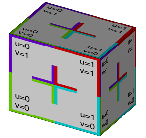
Lot-->
primitiveCube
texture("builtin:uvtest.png")
The inserted cube is fit into the current scope. The scope's zero size is modified relative to the average of the two non-zero sizes.
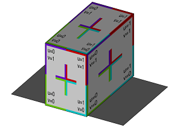
Lot-->
primitiveCube(10,15,20)
texture("builtin:uvtest.png")
The inserted cube has a width of 10, a height of 15, a depth of 20 and is positioned in the xz center.
Related
primitiveSphere operation
sides float Number of subdivisions along latitude of the sphere. There must be at least 3 sides. The default value is 16.
divisions float Number of subdivisions along longitude of the sphere. There must be at least 2 divisions. The default value is 16.
radius float Radius of the sphere.
The primitiveSphere operation inserts a sphere geometry into the scope of the current shape.
- If no radius is given the bounding box coincides with the scope. Zero scope sizes are handled the same way as in the i operation.
- If radius is specified the sphere is positioned in the xz-center of the scope lying on y=0.
The sphere has texture coordinates on the first texture layer (COLORMAP).
Examples
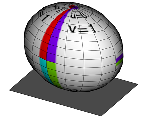
Lot-->
primitiveSphere
texture("builtin:uvtest.png")
The inserted sphere has 16 sides, 16 divisions and is fit into the current scope. The scope's zero size is modified relative to the average of the two non-zero sizes.
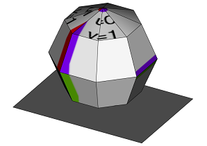
Lot-->
primitiveSphere(8,4,10)
texture("builtin:uvtest.png")
The inserted sphere has 8 sides, 4 divisions, a radius of 10 and is positioned in the xz center.
Related
primitiveCylinder operation
sides float Number of subdivisions of the cylindrical surface. There must be at least 3 sides. The default value is 16.
radius float Radius of the cylinder.
height float Height of the cylinder.
The primitiveCylinder operation inserts a cylinder geometry into the scope of the current shape.
- If no radius and height are given the bounding box coincides with the scope. Zero scope sizes are handled the same way as in the i operation.
- If dimensions are specified the cylinder is positioned in the xz-center of the scope lying on y=0.
The cylinder has texture coordinates on the first texture layer (COLORMAP).
Examples
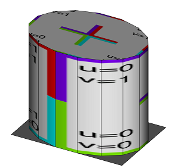
Lot-->
primitiveCylinder
texture("builtin:uvtest.png")
The inserted cylinder has 16 sides and is fit into the current scope. The scope's zero size is modified relative to the average of the two non-zero sizes.
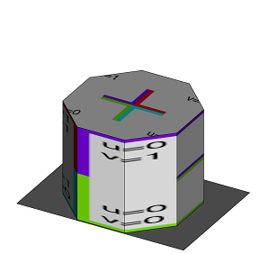
Lot-->
primitiveCylinder(8,10,15)
texture("builtin:uvtest.png")
The inserted cylinder has 8 sides, a radius of 10, a height of 15 and is positioned in the xz center.
Related
primitiveCone operation
sides float Number of subdivisions of the cone surface. There must be at least 3 sides. The default value is 16.
radius float Radius of the cone.
height float Height of the cone.
The primitiveCone operation inserts a cone geometry into the scope of the current shape.
- If no radius and height are given the bounding box coincides with the scope. Zero scope sizes are handled the same way as in the i operation.
- If dimensions are specified the cone is positioned in the xz-center of the scope lying on y=0.
The cone has texture coordinates on the first texture layer (COLORMAP).
Examples
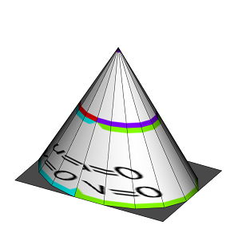
Lot-->
primitiveCone
texture("builtin:uvtest.png")
The inserted cone has 16 sides and is fit into the current scope. The scope's zero size is modified relative to the average of the two non-zero sizes.
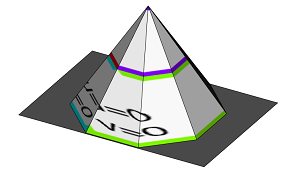
Lot-->
primitiveCone(8,10,15)
texture("builtin:uvtest.png")
The inserted cone has 8 sides, a radius of 10, a height of 15 and is positioned in the xz center.